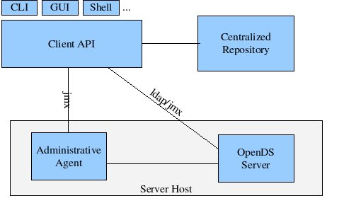

Administrative Command Line Interface
Software Design Document
Revision History
| Version |
Author |
Date |
Comments |
| 0.1 |
Kenneth Suter
|
2007-02-14
|
Initial Draft |
| 0.2 |
Kenneth Suter |
2007-02-15 |
Incorporated content from design discussions |
|
Table of Contents
1.
Introduction
1.2 Glossary
1.3 References
2.
Overview
3.
Design Considerations
3.1
Assumptions and Dependencies
3.2
Goals and Guideline
3.3
Development Method
4.
Architectural Strategies
5.
System Architecture
6.
Detailed System Architecture
6.1 Components
6.2 Server and Server Group IDs
6.3 Specifying Servers
6.4 Command Forms
6.4.1 Task Commands
6.4.2 Server Configuration Commands
6.4.3 Service Commands
6.4.4 Script Command
7. Unit tests
8. Feature's
configuration
9. External Impacts
9.1 Impact
on Documentation
9.2 Impact
on Configuration interfaces
9.3
Impact on other subsystems
9.4 Other
external impacts
The purpose of this document is to provide a design for the OpenDS
administrative command line interface (CLI). The scope of this
document covers the
syntax form and function of the administrative tool but does not cover
other command line interface tools shipped with OpenDS such as
'ldapsearch'. The
intended audience are those interested in the design and implementation
of the tool. The audience should already be familiar with
requirements pertaining to administrative client tools.
1.2 Glossary
|
Term
|
Description
|
|
Remote Administration Data (RAD)
|
Data that describes properties (host names, server and group
IDs, software components) of an OpenDS topology used for remote
administration. This is similar in concept to the data that is
stored in the ADS of SJS Directory Server 6.
|
| Remote Administration Agent (RAA) |
An server instance that acts upon software components on the local file system on behalf of remote clients. |
| Remote Administration Module (RAM) |
Conceptual object containing RAD and RAA |
|
1.3 References
This document is intended to serve as specification of the form, syntax and capabilities of the CLI.
The CLI must satisfy requirements pertaining to administrative
client tools. In particular, the CLI must support
all functions related to administration of individual OpenDS
servers both local and remote, as well as the directory service as a
whole. Additionally the CLI must provide a consistent, intuitive
user interface.
In order to be an effective tool,
the CLI exhibit consistency and predictability in both form and
function. Such goals are only achievable by specifying or
adopting an existing paradigm for commands exposed by the CLI.
Rather than design such a specification the CLI will adopt the
Command Line Interface Paradigm (CLIP) formalized by Sun Microsystems
in January 2003 (see References). CLIP serves as a set of guidelines that specify the human interface for command line utilities.
Given the similarity between the administration framework of Sun
Java System Directory Server 6 and that currently being proposed for
OpenDS, we can use lessons learned from the former's CLI.
The CLI will be developed through analysis of the capabilities supported by the OpenDS administrative framework.
The CLI like other parts
of OpenDS will be implemented in Java. Given that there are
other existing implementation of CLIP compliant interfaces (SJS
Directory Server 6, Glassfish, etc) attempts will be made to reuse
existing code libraries where feasible.
The administrative CLI will interact with the OpenDS Client API on behalf of
administrators the OpenDS directory service. The following
diagram represents the role the CLI, along with the GUI and shell play
in the OpenDS Administration and Configuration Framework:

6.1 Components
The CLI itself will be composed of the following components:
- One or more client libraries (JAR) files that depend on the Client API
- [optional] Topology configuration (TC) file(s)
At installation time, the software will be installed on the local
file system. If the human installer has indicated that they would
like remote management capabilities of the server being installed,
topology configuration (TC) files are created in the file system
that point the CLI to one or more instances of remote administration
data (RAD). The CLI will use the RAD to resolve server and group
ID references and discover host and port information about server
components within the topology.
The TC files will not be present for installations without
remote installation capabilities in which case all invocations of the
CLI will require LDAP host/port specification either explicitly or by
default values of the CLI (e.g. no host/port specified defaults to localhost port 389).
The contents of the TC file will consist or pointers to one or more
instances of RAD. The CLI may offer tools for updating the
contents of an existing TC files or creating new TC files for users who
might require access to multiple topologies. For instance a
single human user may wish to use a single installation of the CLI to
manage both a 'test' and 'production' deployment topologies. The
CLI will update these pointers as remote administration modules (RAM)
are added, changed or removed from the topology. The CLI will
discover this information through references in the CLI configuration
files. If the CLI cannot access RAD through any of the pointers
in the TC file(s), the command line invocation will fail with a message
explicitly indicating the scope of the problem to the user.
6.2 Server and Server Group IDs
The CLI will support the ability to allow the user to refer to a
particular server by a user definable name called or server ID.
In addition, the CLI will support the ability to to group
arbitrary servers for the purpose of invoking commands on several
servers at once. In these cases the user need specify a
group's ID in a single invocation of the CLI to perform tasks upon all
servers in the group. The CLI will provide tools for managing
both server and group IDs as well as the set of servers that compose
individual groups.
6.3 Specifying Server(s)
All CLI commands will require specification of an object (usually a
server but perhaps something else like a certificate database) upon
which the CLI command will act. For commands that act upon one or
more servers, the command line will support their specification in
one of the following ways:
- LDAP host/port - The CLI will use this information to send management operations to the server over LDAP
- Server ID (remote administration only)
- The CLI will use information obtained through the remote
administration data (RAD) to determine the server and appropriate
interface (LDAP, JMX) through which operations will take place
- Group ID (remote administration only) - Same as with the Server ID except that the operation is performed for every server within the group
- implicit - If none of the
above are specified some commands may support the notion of a default
server instance. This is especially true for task commands.
However, it is important that commands do not make it easy for
someone to accidentally make a detremental configuration change.
6.4 Command Forms
The CLI will have different forms of commands that may imply different interface requirements or implementation.
6.4.1 Local Commands
Task commands will support execution of a common user task.
Examples of operations implemented as task commands are 'start
server' and 'restore backend'. Some task commands may support an
implicit specification of a target server. For instance invoking
'start server' without option arguments would start the local server. Typically these commands would be found in the /bin directory of the file system root of the OpenDS instance.
Local commands will operate soley on an associated instance of OpenDS
and therefore will not support specification of a remote server or
server group. These commands will be installed along with an
OpenDS server and cannot be installed standalone.
See the Command Line Usage Guide Documentation Depot for information on the currently implemented set of local commands.
| Object |
Operations |
Note |
| Certificates |
- Add a certificate to the certificate database
- Create and adds a selfsign certificate to the certificate database
- Export a certificate and its keys from the database
- Add a new certificate and its keys to the cert database
- Add a new selfsign certificate and its keys to the cert database
- List all certificates in the database
- Remove a certificate from the database
- Renew a certificate
- Renew a selfsign certificate
- Generate a certificate request
- Display a certificate
|
|
| Server |
- Manage startup at system boot
- Backs up instance
- Create instance
- Delete instance
- Unregister instance in a service
- Register instance from a service
- Create LDIF representation of instance
- Display optional instance flag values
- Generate legacy scripts in instance
- Populate existing suffix with LDIF data
- Display instance status and some configuration info
- Regenerate existing indexes
- Restart instance
- Restore instance from backup archive
- Set optional instance flags
- Start instance
- Stops instance
|
|
6.4.2 Server Configuration Commands
Configuration commands will support the configuration of servers or
server modules. Examples of operations implemented as
configuration commands are 'set port number' and 'configure
directory server'. Configuration command should require the user
to explicitly identify a server instance in order to reduce the
possibility of a user making an accidental configuration change to a
server.
The configuration commands will be specified as part of the Client API
XML object specification. Individual component objects will
support a group that allows a single command to handle configuration
for that object group. For instance there may be 3 objects that
make up the configuration of synchronization in that are grouped and
together support a single 'configure synchronization' command.
Configuration Commands are capable of operating on any server in a
topology and will support a full array of options for specifying a
server by ID, group, or host/port combination.
| Object |
Operations |
Note |
| Synchronization |
- Ensure the authentication properties in accord
- Create replication agreement
- Create a prioritized replication rule
- Delete replication agreement
- Delete a prioritized replication rule
- Demote an existing replicated suffix
- Abandon replication for replicated suffix
- Disable replication with another directory
- Enable replication by assigning a role to an existing suffix
- Enable replication with another directory
- Display replication agreement property values
- Launche total update of remote replica from local suffix
- List replication agreements
- List prioritized replication rules and displays their property values
- Promote an existing replicated suffix
- Set replication agreement property values
- Display a comparison of a source and destination suffix configuration and the status of the replication agreement
- Force updates of remote replica from local suffix
|
These operations come from
DS 6 replication concepts and are listed here primarily as a
placeholder. OpenDS synchronization will be different. |
| Backup/Restore |
|
|
| Encrypted Attributes |
- Create
- Delete
- List
- Display property values
|
|
| Index |
- Create an indexed attribute
- Delete an indexed attribute
- Display index property values
- List indexed attributes
- Rebuild indexes of an existing suffix
- Set index property values
|
|
| Plugin |
- Create
- Delete
- Disable
- Enable
- Display plugin property values
- List
- Set property values
|
|
| Suffix |
- Create suffix and empty data
- Delete suffix configuration and data
- Export to LDIF
- Display suffix property values
- Import from LDIF
- List
- Set property value
|
|
| Log |
- Display server log property values
- Rotate
- Set server log property values
|
|
| Server |
- Display server property values
- Display information about server configuration
- Change password compatability mode
- Set server property values
- Display a status active tasks
|
|
6.4.3 Service Commands
Service commands are those that support operations that span OpenDS
servers. For instance 'start remote server(s)', 'list remote
administrators', and 'synchronize' might be examples of operations that
would potentially operate on multiple servers.
Like server configuration commands, service commands that require
specification of a particular server will support the ability to
identity servers by ID, group,
<TODO: list service commands>
6.4.4 Script Command
For purposes of scriptability, it would be convenient to support a
single command capable of invoking any operation in the system.
Such a command may have different behaviors than the other
command forms. For instance, such a command would never solicite
a confirmation from the user since its primary purpose is to be invoked
without human interaction. Such a command would also support
facilities for executing a set of commands stored in a file.
<TODO: script commands>
<Discuss the software entities/object in these components, use UML
Class
Diagram to present the Java objects and their relationship>
7. Unit Tests
To be determined.
8. Feature's Configuration
<What configuration attributes will we expose>
<what type and valid valuewill they have>
<How will the configuration attributes be used>
9. External impacts
9.1 Impact on
Documentation
In addition to general documentation about how the CLI's form (use
of commands, subcommands, operands, operators etc) the user
documentation must provide complete descriptions of each CLI command
and its input parameters.
9.2 Impact on
Configuration Interfaces
The CLI itself will be a configuration interface.
9.3 Impact on
Other OpenDS subsystems
The CLI is a client of the administration framework's Client API and
may impose its own set of requirements on this interface into the
system.
9.4 Other external
Impacts
None